14 AED de multivariadas
Neste tutorial, vamos utilizar os pacotes abaixo. Caso você não possua algum dos pacotes listados, lembre-se de instalar cada um utilizando o comando abaixo:
# Para instalar pacotes no R, use a funcao `install.packages()`
install.packages("ape")
install.packages("labdsv")Carregue-os todos e siga em frente.
14.1 Matrizes de distância
Matrizes de distância ou dissimilaridade são muito usadas em AEDs multivariadas. Por exemplo, para estimar a similaridade entre diferentes comunidades vegetais segundo a presença ou ausência de espécies (ou um índice de similaridade que leva em conta as abundâncias relativas); para estimar a similaridade entre espécies ou a relação entre similaridade genética ou morfológica e distância geográfica etc.
A função dist() é a mais básica do R para calcular dissimilaridades entre objetos.
Ela calcula dissimilaridades segundo diferentes métodos (argumento method).
Há também a função vegdist() do pacote vegan (Oksanen et al. 2020) que faz a mesma coisa, mas tem índices de dissimilaridade que dist() não implementa, muito dos quais muito usados em ecologia de comunidades.
Busque ler o ? dessas duas funções (execute ?dist e ?vegdist no console), atentando para os diferentes índices de dissimilaridade.
Na função vegdist(), você encontra os principais índices de dissimilaridade usados em ecologia.
Para entender o que essas funções fazem, vamos ver um exemplo simples de cálculo de distância euclidiana, que é o método padrão de dist().
# usando o método euclidiano
# plota um gráfico vazio com coordenadas x e y de 1 a 10
plot(1:10, 1:10, type = "n")
# adiciona dois pontos:
# um na coordenada 4,4
points(4, 4, pch = 21, bg = "red")
# outro na coordenada x=8, y=8
points(8, 8, pch = 21, bg = "blue")
# a distancia euclidiana entre eles é dada por essa linha
segments(4, 4, 8, 8)
# essa linha é a hipotenusa do triângulo
polygon(x = c(4, 8, 8, 4), y = c(4, 8, 4, 4), density = 40)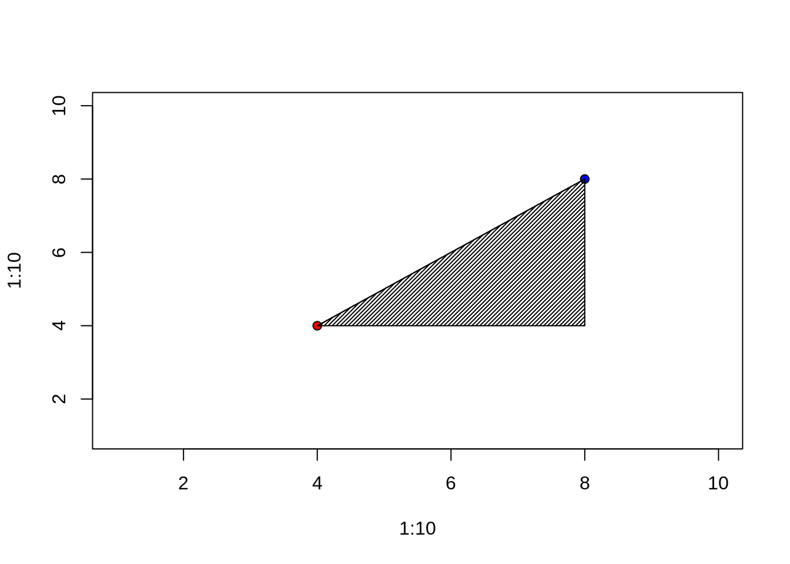
# portanto a distancia entre os pontos, por Pitágoras, é
# sqrt(hipotenusa) = sum(catetoA^2+catetoB^2)
d <- sqrt((8 - 4)^2 + (8 - 4)^2)
# agora usando a função dist
# coloco as coordenadas dos dois pontos acima num data.frame
pontos <- data.frame(X = c(4, 8), Y = c(4, 8))
pontos| X | Y |
|---|---|
| 4 | 4 |
| 8 | 8 |
## 1
## 2 5.656854## [1] TRUE14.2 Ordenação com matrizes de distância
Reduzir espaços multivariados em poucas dimensões a partir de matrizes de distância é útil quando nossas variáveis não têm distribuição normal, que é uma das premissas da Análise de Componentes Principais (PCA) e outros métodos de ordenação paramétricos.
Se você parte de uma matriz de distância, pode fazer ordenações multivariadas com dados não normais ou mesmo dados categóricos e semi-quantitativos, desde que com eles você possa calcular uma matriz de distância.
14.3 Escalonamento Não-Métrico Multimensional (NMDS)
A NMDS é uma técnica de ordenação multivariada que permite visualizar graficamente distâncias entre objetos.
No R há várias funções que executam isso: isoMDS(); cmdscale(); e nmds() e bestnmds() do pacote labdsv (Roberts 2019).
Vamos usar a função bestnmds() nos exemplos abaixo.
Para entender, veja um exemplo para distâncias geográficas entre cidades na região norte do Brasil. Se queremos representar graficamente distâncias geográficas, estaremos de certa forma reproduzindo um mapa:
Vamos utilizar o conjunto de dados contendo coordenadas geográficas de municípios do Brasil para esta prática, utilizado na seção 3.4.2.
# visualizando distancias usando NMDS
# Vamos usar o arquivo com coordenadas dos municipios brasileiros
muni <- read.table(file = "municipiosbrasil.csv", header = T, as.is = T, sep = "\t", na.strings = c("NA", "", "NULL"))Para simplificar, vamos filtrar apenas algumas cidades da região Norte:
cids <- c("Rio Branco", "Cruzeiro do Sul", "Tabatinga", "São Gabriel da Cachoeira", "Manaus", "Santarém", "Porto Velho", "Humaitá", "Belém", "Macapá", "Marabá", "Boa Vista")
# filtrando os dados
vl <- muni$Municipio %in% cids
muni <- muni[vl, ]
# calcula a distancia geografica entre essas cidades (em graus de latitude).
# Idealmente deveríamos converter latitude e longitude em décimos de graus para UTM para obter distancias em km ou m.
mdist <- dist(muni[, c("Longitude", "Latitude")], method = "euclidean")Vamos utilizar a função bestnmds do pacote labdsv
Vamos agora instalar o pacote e carregar o pacote labdsv:
## [1] 3.739034e-13 8.167216e-03 2.228642e+01 3.791436e+01 6.603351e-03
## [6] 6.029306e-03 2.109747e+01 9.041554e-03 4.415954e-03 4.861851e-01
## [11] 4.001459e-03 8.141675e-03 9.111469e-03 3.737914e+01 6.265940e-03
## [16] 4.124426e+01 9.818992e+00 2.702450e+01 3.316186e-03 3.712228e+01
##
## best result = 1
## with stress = 3.739034e-13## List of 3
## $ points: num [1:21, 1:2] -18.2 -12.9 17.3 -14.7 -16.4 ...
## ..- attr(*, "dimnames")=List of 2
## .. ..$ : chr [1:21] "3" "14" "74" "135" ...
## .. ..$ : NULL
## $ stress: num 3.74e-13
## $ type : chr "NMDS"
## - attr(*, "class")= chr [1:2] "dsvord" "nmds"
## - attr(*, "call")= language bestnmds(dis = mdist, k = 2)
## - attr(*, "timestamp")= chr "Tue Mar 9 18:42:18 2021"# o valor do stress indica o ajuste. Se o stress for 0, o ajuste é perfeito:
# a posição dos pontos é proporcional a distância entre eles
onmds$stress## [1] 3.739034e-13# quanto da variação foi explicada?
# essa pergunta a gente faz com PCA, não faz sentido fazer com NMDS.
# Mas, se você quer ter uma ideia de quanto um eixo capturou da variação,
# pode correlacionar a matriz de distancia original com uma matriz de distancia
# gerada pelos valores dos eixos nmds
# pega os valores dos eixos NMDS
ptsnmds <- onmds$points
# calcula a distancia
adist <- dist(ptsnmds)
# qual a correlacao entre essas matrizes de distancia?
cor(mdist, adist)## [1] 1# por isso o stress é baixo
# vamos comparar graficamente:
# divide o dispositivo em duas partes
par(mfrow = c(2, 1), mar = c(5, 5, 1, 1))
# adiciona limite no eixo X e y
xl <- range(ptsnmds[, 1]) + c(-1, 10)
yl <- range(ptsnmds[, 2]) + c(-2, 2)
# plota pontos
plot(ptsnmds, type = "p", pch = 21, bg = "red", xlab = "NMDS 1", ylab = "NMDS 2", xlim = xl, ylim = yl, cex = 0.5)
# adiciona o nome das cidades
text(ptsnmds, labels = muni$Municipio, cex = 0.8, pos = 4)
xl <- range(muni$Longitude) + c(-2, 5)
yl <- range(muni$Latitude) + c(-2, 2)
plot(muni$Longitude, muni$Latitude, type = "p", xlab = "Longitude", ylab = "Latitude", xlim = xl, ylim = yl, pch = 21, cex = 0.5, col = "blue")
text(muni$Longitude, muni$Latitude, labels = muni$Municipio, cex = 0.8, pos = 4)
14.3.1 Exemplo com dados morfológicos
Um exemplo de NMDS para mostra a similaridade entre indivíduos de Iris a partir de uma matriz de distância morfológica usando os dados de iris do R.
| Sepal.Length | Sepal.Width | Petal.Length | Petal.Width | Species |
|---|---|---|---|---|
| 5.1 | 3.5 | 1.4 | 0.2 | setosa |
| 4.9 | 3.0 | 1.4 | 0.2 | setosa |
| 4.7 | 3.2 | 1.3 | 0.2 | setosa |
| 4.6 | 3.1 | 1.5 | 0.2 | setosa |
| 5.0 | 3.6 | 1.4 | 0.2 | setosa |
| 5.4 | 3.9 | 1.7 | 0.4 | setosa |
| Sepal.Length | Sepal.Width | Petal.Length | Petal.Width | Species | |
|---|---|---|---|---|---|
| 102 | 5.8 | 2.7 | 5.1 | 1.9 | virginica |
| 143 | 5.8 | 2.7 | 5.1 | 1.9 | virginica |
# calculamos novamente a distancia
dmorfo <- dist(iris2[, 1:4], method = "eucl")
# calculando um nmds em dois eixos
onmds <- bestnmds(dmorfo, k = 2)## List of 3
## $ points: num [1:149, 1:2] -2.67 -2.71 -2.87 -2.74 -2.72 ...
## ..- attr(*, "dimnames")=List of 2
## .. ..$ : chr [1:149] "1" "2" "3" "4" ...
## .. ..$ : NULL
## $ stress: num 2.58
## $ type : chr "NMDS"
## - attr(*, "class")= chr [1:2] "dsvord" "nmds"
## - attr(*, "call")= language bestnmds(dis = dmorfo, k = 2)
## - attr(*, "timestamp")= chr "Fri Feb 5 10:50:06 2021"## [1] 2.579978# quanto da variação foi explicada?
# essa pergunta a gente faz com PCA, não faz sentido fazer com NMDS.
# Mas, se você quer ter uma ideia de quanto um eixo capturou da variação,
# pode correlacionar a matriz de distancia original
# com uma matriz de distancia gerada pelos valores dos eixos nmds
# pega os valores dos eixos NMDS
ptsnmds <- onmds$points
# cada linha nessa tabela corresponde
# à mesma linha na tabela iris2
head(ptsnmds)| -2.673344 | 0.2751282 |
| -2.705573 | -0.1645018 |
| -2.866471 | -0.0970515 |
| -2.737119 | -0.2591412 |
| -2.717433 | 0.2980718 |
| -2.296804 | 0.6687755 |
## [1] TRUE# calcula a distancia entre os pontos pelos eixos NMDS
adist <- dist(ptsnmds)
# qual a correlacao entre essa matriz e a original?
cor(dmorfo, adist)## [1] 0.9988093Agora vamos fazer com outro índice de distância chamado gower, por exemplo, que é um bom índice quando se tem dados semiquantitativos na matriz (não é o caso aqui).
Vamos utilizar a função vegdist() do pacote vegan (Oksanen et al. 2020).
# pega os valores dos eixos NMDS
ptsnmds2 <- onmds2$points
# cada linha nessa tabela corresponde
# à mesma linha na tabela iris2
head(ptsnmds2)| -0.2907098 | 0.0456498 |
| -0.2712303 | -0.0244397 |
| -0.3013570 | -0.0090738 |
| -0.2933819 | -0.0245441 |
| -0.3066071 | 0.0494793 |
| -0.2595641 | 0.1165398 |
## [1] TRUE# calcula a distancia entre os pontos pelos eixos NMDS
adist2 <- dist(ptsnmds2)
# qual a correlacao entre essa matriz e a original?
cor(dmorfo2, adist2)## [1] 0.9950709# vamos visualizar os dois resultados, onmds e onmds2, graficamente
# divide o dispositivo em dois
par(mfrow = c(2, 1), mar = c(5, 5, 1, 1))
cores <- c("red", "green", "blue")[as.numeric(iris2$Species)]
plot(ptsnmds, pch = 21, bg = cores, cex = 0.8, xlab = "NMDS 1", ylab = "NMDS 2", main = "Objeto: ptsnmds")
plot(ptsnmds2, pch = 21, bg = cores, cex = 0.8, xlab = "NMDS 1", ylab = "NMDS 2", main = "Objeto: ptsnmds2")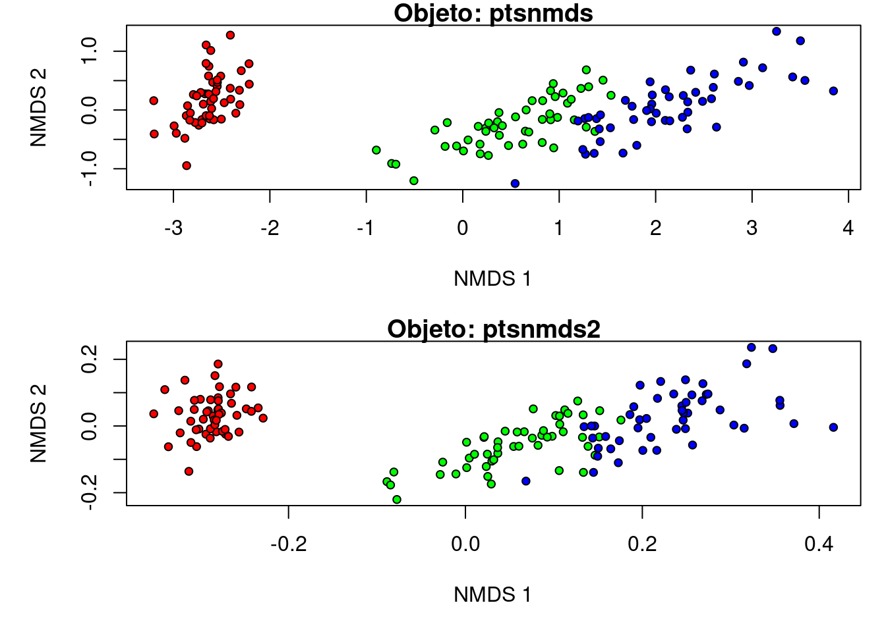
14.4 Análises de agrupamento
A função hclust() faz uma análise de agrupamento a partir de uma matriz de distância e segundo um método.
Gera um objeto de classe hclust que contem a estrutura hierárquica da similaridade entre os seus dados (a hierarquia dada pela distância mais o método de agrupamento).
Em análises de agrupamento, é normal lidar com objetos de classe dendrogram.
Podemos converter alguns objetos para esta classe usando a função as.dendrogram(), que facilita a geração de gráficos.
Outra classe importante é phylo, utilizada em objetos que contenham árvores filogenéticas (pacote ape de Paradis et al. (2020)).
Há a função as.phylo() que pode converter um objeto hclust para classe phylo e manipular o dendrograma como se fosse uma filogenia.
Também facilita a geração de gráficos.
# Vamos usar o arquivo com coordenadas dos municipios brasileiros
muni <- read.table(file = "municipiosbrasil.csv", header = T, as.is = T, sep = "\t", na.strings = c("NA", "", "NULL"))cids <- c("Rio Branco", "Cruzeiro do Sul", "Tabatinga", "São Gabriel da Cachoeira", "Manaus", "Santarém", "Porto Velho", "Humaitá", "Belém", "Macapá", "Marabá", "Boa Vista")
# filtrando os dados
vl <- muni$Municipio %in% cids & muni$Regiao == "Norte"
muni <- muni[vl, ]
rownames(muni) <- muni$Municipio
# calcula a distancia geografica entre essas cidades (em graus de latitude)
mdist <- dist(muni[, c("Longitude", "Latitude")], method = "euclidean")14.4.1 Agrupamento pelo método da mínima variância
14.4.2 Agrupamento por UPGMA
gp2 <- hclust(mdist, method = "average")
plot(gp2, hang = 0.1, main = "Cidades da região norte", ylab = "Distância geográfica (dd)")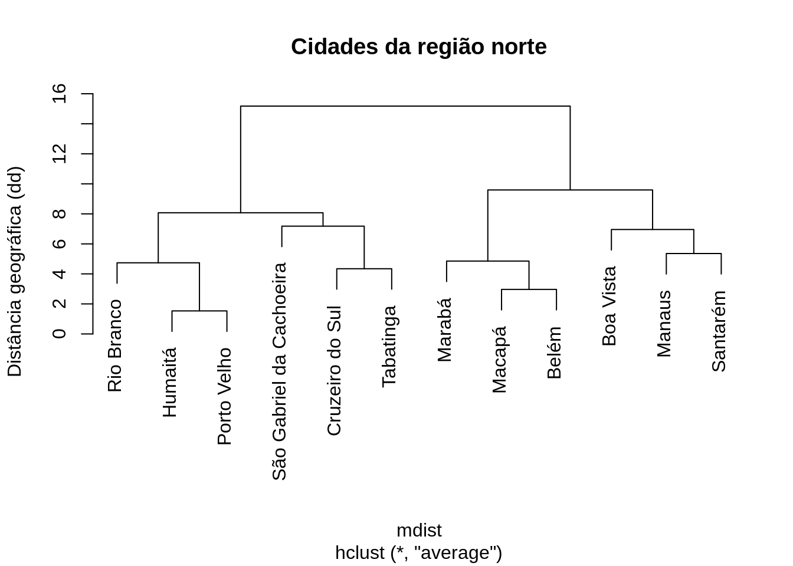
14.4.3 Agrupamento por centróides
gp3 <- hclust(mdist, method = "centroid")
plot(gp3, hang = 0.1, main = "Cidades da região norte", ylab = "Distância geográfica (dd)")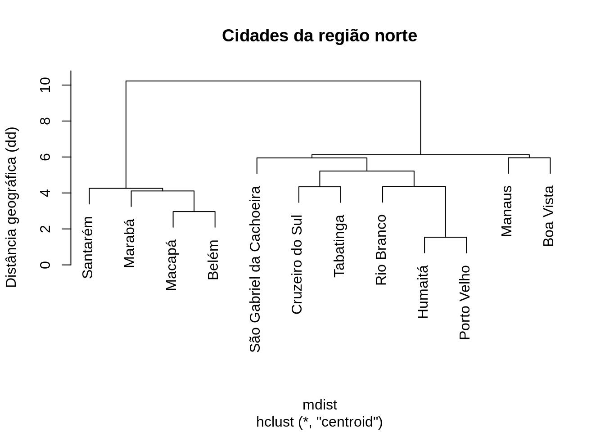
Vamos converter nossos objetos gp e gp3 para objetos de classe phylo, e gerar um gráfico para cada um.
plot(as.phylo(gp), type = "phylogram", label.offset = 0.1, cex = 0.8)
axis(side = 1)
mtext(side = 1, line = 2.5, text = "Distância geográfica")# ou entao, como cladograma, e nao usando o comprimento dos ramos (i.e. as distancias)
plot(as.phylo(gp), type = "cladogram", label.offset = 0.1, cex = 0.8, use.edge.length = F)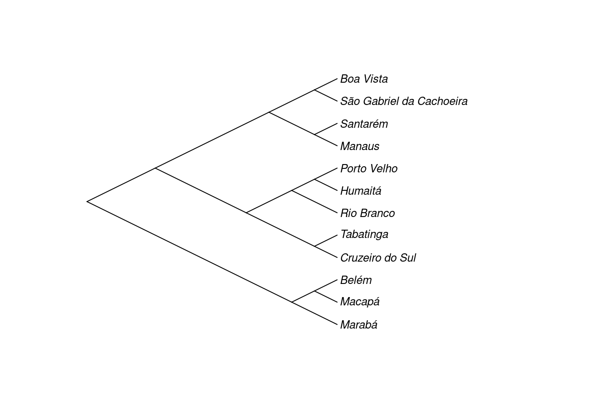
# ou entao, radial, com distancias
plot(as.phylo(gp), type = "radial", label.offset = 0.1, cex = 0.8, use.edge.length = T)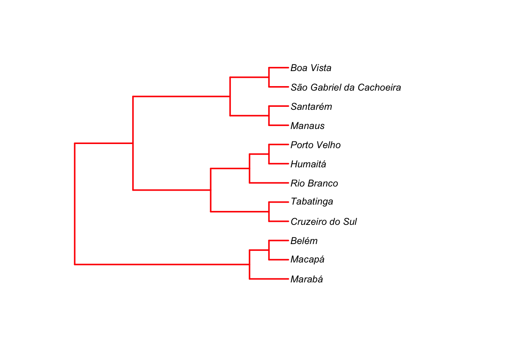
# usando comprimento dos ramos (distancias+relacoes)
plot(as.phylo(gp), type = "phylogram", label.offset = 0.1, cex = 0.8, use.edge.length = T)
axis(side = 1)
mtext(side = 1, line = 2.5, text = "Distância geográfica")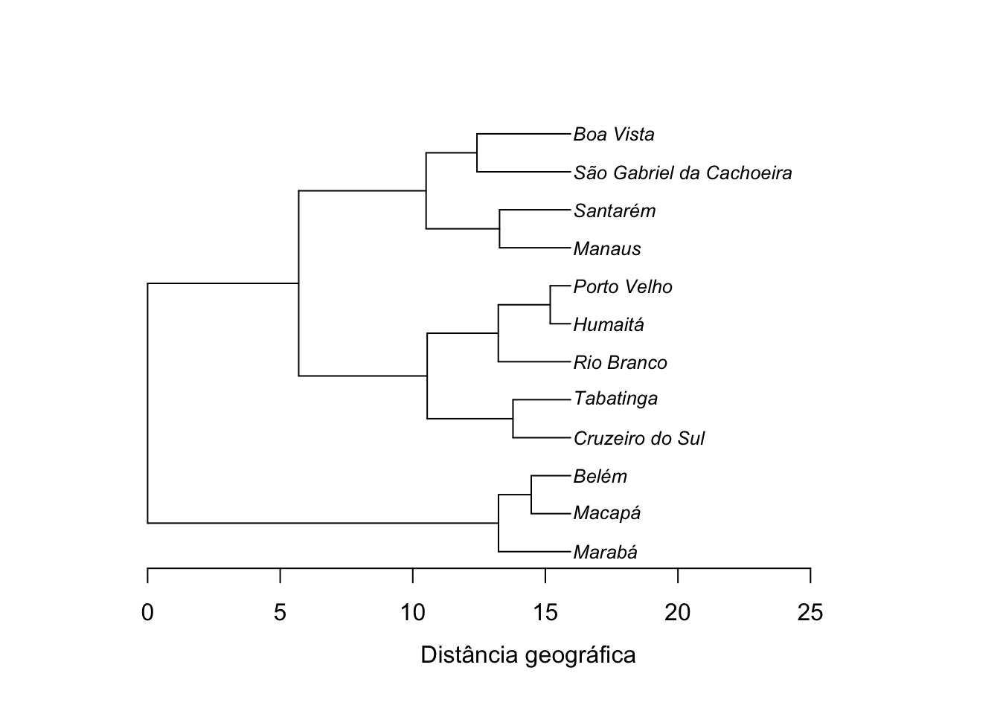
# nao usando o comprimento dos ramos (relacoes apenas)
plot(as.phylo(gp), type = "phylogram", label.offset = 0.1, cex = 0.8, use.edge.length = F, edge.color = "red", edge.width = 2)
14.4.4 Exemplo florístico
Vamos explorar a similaridade florística entre parcelas com os dados de caixetais novamente.
| local | parcela | arvore | fuste | cap | h | especie |
|---|---|---|---|---|---|---|
| chauas | 1 | 1 | 1 | 210 | 80 | Myrcia sulfiflora |
| chauas | 1 | 3 | 1 | 170 | 80 | Myrcia sulfiflora |
| chauas | 1 | 4 | 1 | 720 | 70 | Syagrus romanzoffianus |
| chauas | 1 | 5 | 1 | 200 | 80 | Tabebuia cassinoides |
| chauas | 1 | 6 | 1 | 750 | 170 | indet.1 |
| chauas | 1 | 7 | 1 | 320 | 80 | Myrcia sulfiflora |
## [1] "local" "parcela" "arvore" "fuste" "cap" "h" "especie"# vamos visualizar a similaridade florística entre parcelas
# entao geramos uma tabela de parcela vs. especies
# primeiro um vetor com valores únicos para local+parcela
# porque o número da parcela repete entre locais
parcelas <- paste(caixeta$local, caixeta$parcela, sep = "-")
tb <- table(parcelas, especies = caixeta$especie)
tb[, 1:5]| Alchornea triplinervia | Andira fraxinifolia | bombacaceae | Cabralea canjerana | Callophyllum brasiliensis | |
|---|---|---|---|---|---|
| chauas-1 | 0 | 0 | 0 | 0 | 0 |
| chauas-2 | 0 | 0 | 0 | 0 | 1 |
| chauas-3 | 0 | 0 | 0 | 0 | 3 |
| chauas-4 | 0 | 0 | 0 | 0 | 2 |
| chauas-5 | 0 | 0 | 0 | 0 | 1 |
| jureia-1 | 0 | 0 | 0 | 3 | 0 |
| jureia-2 | 1 | 1 | 1 | 1 | 0 |
| jureia-3 | 0 | 2 | 0 | 0 | 0 |
| jureia-4 | 1 | 0 | 0 | 0 | 0 |
| jureia-5 | 1 | 1 | 0 | 0 | 0 |
| retiro-1 | 1 | 0 | 0 | 0 | 0 |
| retiro-2 | 9 | 0 | 0 | 0 | 0 |
| retiro-3 | 2 | 0 | 0 | 0 | 0 |
| retiro-4 | 0 | 0 | 0 | 0 | 0 |
| retiro-5 | 0 | 0 | 0 | 0 | 0 |
## [1] 15 43# essa tabela contém o número de indivíduos de cada espécie
# em cada parcela
# calculando um índice de distancia de Jaccard para dados de presença e ausência
# transformando em uma tabela de presença e ausencia
tb2 <- tb
tb2[tb2 > 0] <- 1Vamos utilizar a função vegdist() do pacote vegan.
## [1] "dist"| chauas-1 | chauas-2 | chauas-3 | chauas-4 | |
|---|---|---|---|---|
| chauas-1 | 0.0000000 | 0.7500000 | 0.80 | 0.8181818 |
| chauas-2 | 0.7500000 | 0.0000000 | 0.50 | 0.5714286 |
| chauas-3 | 0.8000000 | 0.5000000 | 0.00 | 0.2500000 |
| chauas-4 | 0.8181818 | 0.5714286 | 0.25 | 0.0000000 |
Podemos fazer um NMDS com esse resultado:
onmds <- bestnmds(djac, k = 2)
# parcelas 3 e 5 tem exatamente as mesmas espécies
# vamos com colocar um valor super pequeno para essa distancia (quase zero)# plotando o resultado
# pega cores e simbolos segundo o local
ll <- data.frame(local = caixeta$local, parcelas)
ll <- unique(ll)
rownames(ll) <- ll$parcelas
ll| local | parcelas | |
|---|---|---|
| chauas-1 | chauas | chauas-1 |
| chauas-2 | chauas | chauas-2 |
| chauas-3 | chauas | chauas-3 |
| chauas-4 | chauas | chauas-4 |
| chauas-5 | chauas | chauas-5 |
| jureia-1 | jureia | jureia-1 |
| jureia-2 | jureia | jureia-2 |
| jureia-3 | jureia | jureia-3 |
| jureia-4 | jureia | jureia-4 |
| jureia-5 | jureia | jureia-5 |
| retiro-1 | retiro | retiro-1 |
| retiro-2 | retiro | retiro-2 |
| retiro-3 | retiro | retiro-3 |
| retiro-4 | retiro | retiro-4 |
| retiro-5 | retiro | retiro-5 |
rn <- rownames(as.matrix(tb2))
locais <- as.factor(ll[rn, "local"])
cores <- c("red", "green", "blue")[as.numeric(locais)]
pchs <- (21:23)[as.numeric(locais)]
plot(onmds$points, pch = pchs, bg = cores, xlab = "NMDS1", ylab = "NMDS2", cex = 1.5)
legend("bottomright", legend = levels(locais), pch = 21:23, pt.bg = c("red", "green", "blue"), inset = 0.05, bty = "n", cex = 1, pt.cex = 1.5, y.intersp = 1.5)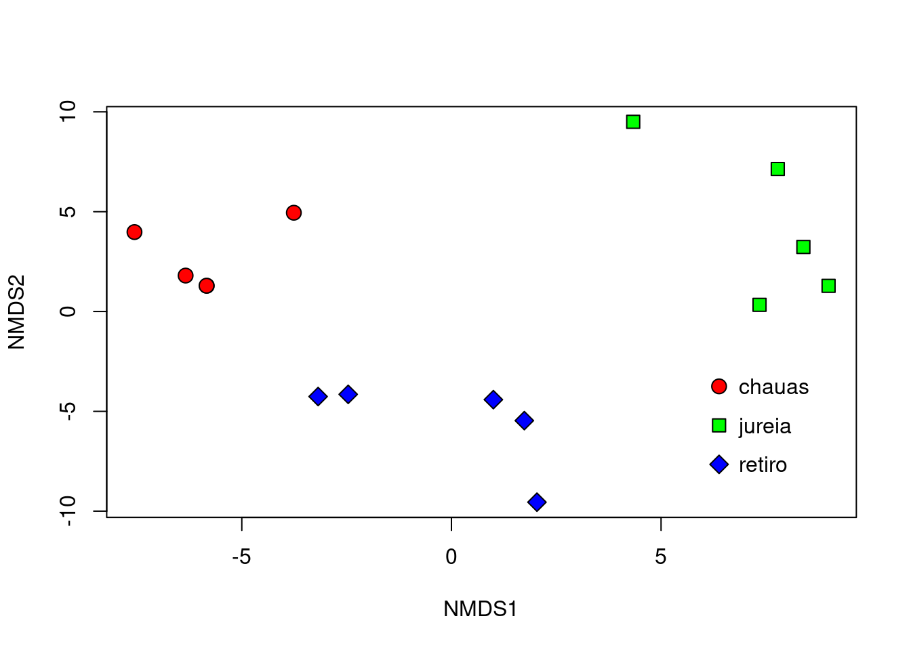
Agora vamos visualizar o resultado na forma de um agrupamento:
cluster <- hclust(djac, method = "ward.D2")
plot(cluster, ylab = "Dissimilaridade Florística (Jaccard)")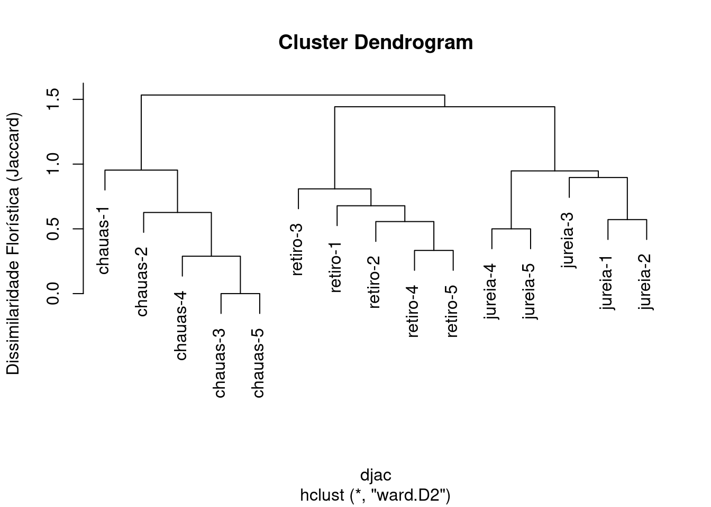
Para aprimorar a figura, vamos utilizar a função as.phylo() do pacote ape (Paradis et al. 2020) para converter o objeto cluster de classe dendrogram para um de classe phylo.
pcl <- as.phylo(cluster)
par(mar = c(5, 4, 3, 3))
plot(pcl, tip.color = cores, label.offset = 0.02, cex = 0.8)
# pontos
tiplabels(pch = 21, frame = NULL, bg = cores)
# eixo
axisPhylo()
# nome do eixo
mtext(text = "Jaccard índice (0 ou 1)", side = 1, line = 2.5)
legend("topleft", legend = levels(locais), pch = 21:23, pt.bg = c("red", "green", "blue"), inset = 0.01, bty = "n", cex = 1, pt.cex = 1.5, y.intersp = 1.5)Vamos repetir essa operação considerando a abundância de espécies por parcelas contidos no objeto tb (usamos o índice de Sorensen).
| Alchornea triplinervia | Andira fraxinifolia | bombacaceae | Cabralea canjerana | Callophyllum brasiliensis | |
|---|---|---|---|---|---|
| chauas-1 | 0 | 0 | 0 | 0 | 0 |
| chauas-2 | 0 | 0 | 0 | 0 | 1 |
| chauas-3 | 0 | 0 | 0 | 0 | 3 |
| chauas-4 | 0 | 0 | 0 | 0 | 2 |
Plota o NMDS:
plot(onmds2$points, pch = pchs, bg = cores, xlab = "NMDS1", ylab = "NMDS2", cex = 1.5)
legend("bottomright", legend = levels(locais), pch = 21:23, pt.bg = c("red", "green", "blue"), inset = 0.05, cex = 0.8, pt.cex = 1.5, y.intersp = 1.5, bty = "n")
Agora, vamos plotar o agrupamento:
cluster2 <- hclust(dsor, method = "ward.D2")
pcl2 <- as.phylo(cluster2)
par(mar = c(5, 4, 3, 3))
plot(pcl2, tip.color = cores, label.offset = 0.02, cex = 0.8)
tiplabels(pch = 21, frame = NULL, bg = cores)
axisPhylo()
mtext(text = "Sorensen índice (com abundância)", side = 1, line = 2.5)
legend("topleft", legend = levels(locais), pch = 21:23, pt.bg = c("red", "green", "blue"), inset = 0.01, bty = "n", cex = 1, pt.cex = 1.5, y.intersp = 1.5)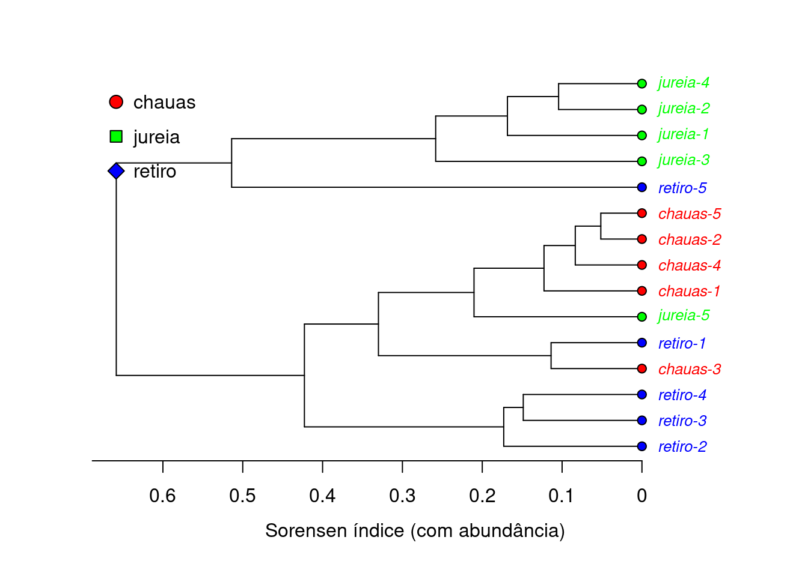
14.4.5 Análise de Coordenadas Principais (PCoA)
A função capscale()faz uma análise de coordenadas principais (ou escalonamento multidimensional métrico ou clássico).
É parecida com uma Análise de Componentes Principais (PCA), mas é baseada em matrizes de distância.
Indica os efeitos das variáveis (parâmetro ‘’species’’) sobre os eixos.
Já a função ordiplot() do pacote vegan (Oksanen et al. 2020) permite graficar uma ordenação e os efeitos das variáveis (sites vs. species).
Leiam aqui uma comparação entre PCA e PCoA
# análise de coordenadas principais
data(iris) # carrega o conjunto de dados iris
dt <- iris[, 1:4]
mypcoa <- capscale(dt ~ 1, distance = "gower", add = F)
# quando da variação está explicado pelos eixos
resumo <- summary(mypcoa)
var.expl <- resumo$cont$importance
# veja a proporção cumulativa dos primeiros cinco eixos
var.expl["Cumulative Proportion", ][1:5]## MDS1 MDS2 MDS3 MDS4 MDS5
## 0.7468617 0.8614730 0.8946967 0.9148675 0.9289785# pega a proporção explicada por cada eixo
tt <- var.expl["Proportion Explained", ][1:5]
tt <- tt * 100
# gera um gráfico de barras com isso
barplot(tt, xlab = "Eixos MDS", ylab = "Variação explicada %")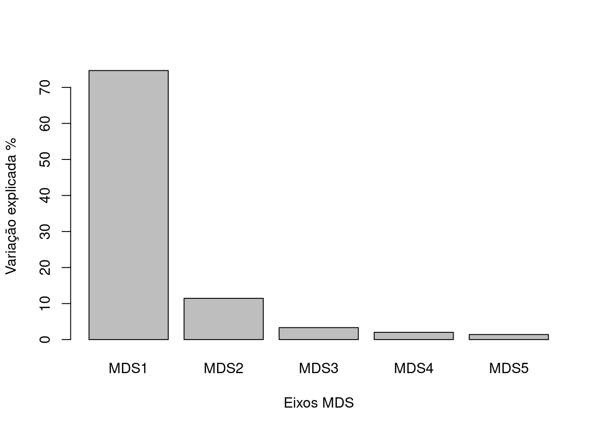
# define cor e simbolo por especie
tx <- as.factor(iris$Species)
# simbolos para os níveis
upchs <- 21:23
# cores para os níveis
cores <- rainbow(length(levels(tx)), alpha = 0.5)
# gera a figura
fig <- ordiplot(mypcoa, type = "n")
# adiciona os pontos de cada linha
points(fig, "sites", pch = upchs[as.numeric(tx)], bg = cores[as.numeric(tx)], col = "white")
# pega os scores das variáveis
# que mostram os efeitos das variáveis usadas
mls <- scores(mypcoa, display = "species")
mls| MDS1 | MDS2 | |
|---|---|---|
| Sepal.Length | 2.0020165 | -1.1230766 |
| Sepal.Width | -0.4980034 | -1.8451477 |
| Petal.Length | 4.7366457 | 0.1241131 |
| Petal.Width | 2.0004259 | -0.1699399 |
# plota flechas para esses efeitos
arrows(0, 0, mls[, 1] * 0.8, mls[, 2] * 0.8, length = 0.05, angle = 20, col = "black", lwd = 2)
text(mls[, 1] * 0.8, mls[, 2] * 0.8, labels = rownames(mls), col = "black", cex = 0.8, pos = 4)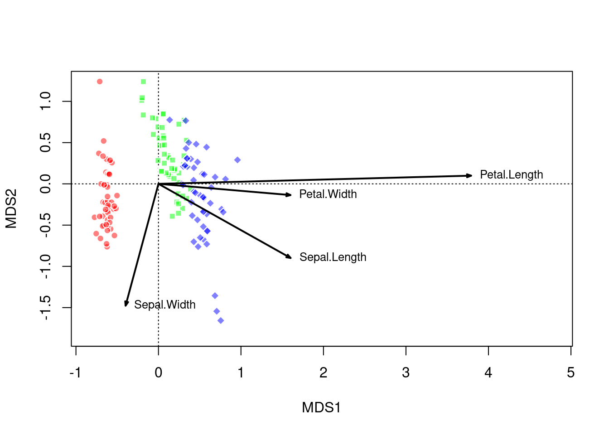
14.5 Componentes Principais (PCA)
Análise de Componentes Principais (PCA) é o método mais conhecido de ordenação, mas diferentemente dos métodos que se baseiam em matrizes de distância (ver abaixo) que são mais flexíveis e menos exigentes quanto à premissas estatísticas, a ordenação com PCA tem as seguintes limitações:
Os componentes principais são independentes apenas se os dados possuirem distribuição normal conjuntamente;
A PCA é sensível à escala relativa das variáveis originais.
Um exemplo:
meu.pca <- prcomp(dt, scale. = T, tol = 0, retx = T)
# entenda os argumentos usados
# classe gerada
class(meu.pca)## [1] "prcomp"## [1] "sdev" "rotation" "center" "scale" "x"Vamos fazer uma figura utilizando a função ordiplot() do pacote vegan:
# quando da variação está explicado pelos eixos
resumo <- summary(meu.pca)
var.expl <- resumo$importance
# veja a proporção cumulativa dos eixos gerados
var.expl["Cumulative Proportion", ]## PC1 PC2 PC3 PC4
## 0.72962 0.95813 0.99482 1.00000# quatro eixos explicam 100% da variacao
# pega a proporção explicada por cada eixo
tt <- var.expl["Proportion of Variance", ]
tt <- tt * 100
# gera um gráfico de barras com isso
barplot(tt, xlab = "Eixos PCA", ylab = "Variação explicada %")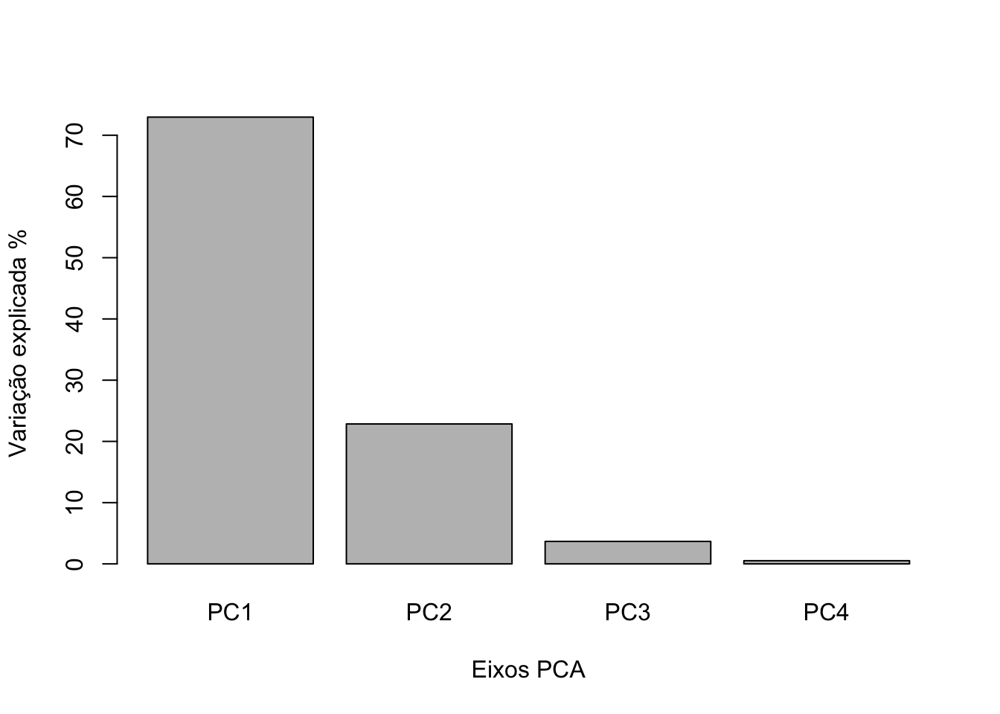
# define cor e simbolo por especie
tx <- as.factor(iris$Species)
# simbolos para os níveis
upchs <- 21:23
# cores para os níveis
cores <- rainbow(length(levels(tx)), alpha = 0.5)
# gera a figura
fig <- ordiplot(meu.pca, type = "n")
# adiciona os pontos de cada linha
points(fig, "sites", pch = upchs[as.numeric(tx)], bg = cores[as.numeric(tx)], col = "white")
# pega os scores das variaveis
# que mostram os efeitos das variáveis usadas
mls <- scores(meu.pca, display = "species")
mls| PC1 | PC2 | PC3 | PC4 | |
|---|---|---|---|---|
| Sepal.Length | 0.5210659 | -0.3774176 | 0.7195664 | 0.2612863 |
| Sepal.Width | -0.2693474 | -0.9232957 | -0.2443818 | -0.1235096 |
| Petal.Length | 0.5804131 | -0.0244916 | -0.1421264 | -0.8014492 |
| Petal.Width | 0.5648565 | -0.0669420 | -0.6342727 | 0.5235971 |
# plota flexas para esses efeitos
ft <- 2 # para aumentar as flexas um pouco
arrows(0, 0, mls[, 1] * ft, mls[, 2] * ft, length = 0.05, angle = 20, col = "black", lwd = 2)
text(mls[, 1] * ft, mls[, 2] * ft, labels = rownames(mls), col = "black", cex = 0.8, pos = 4)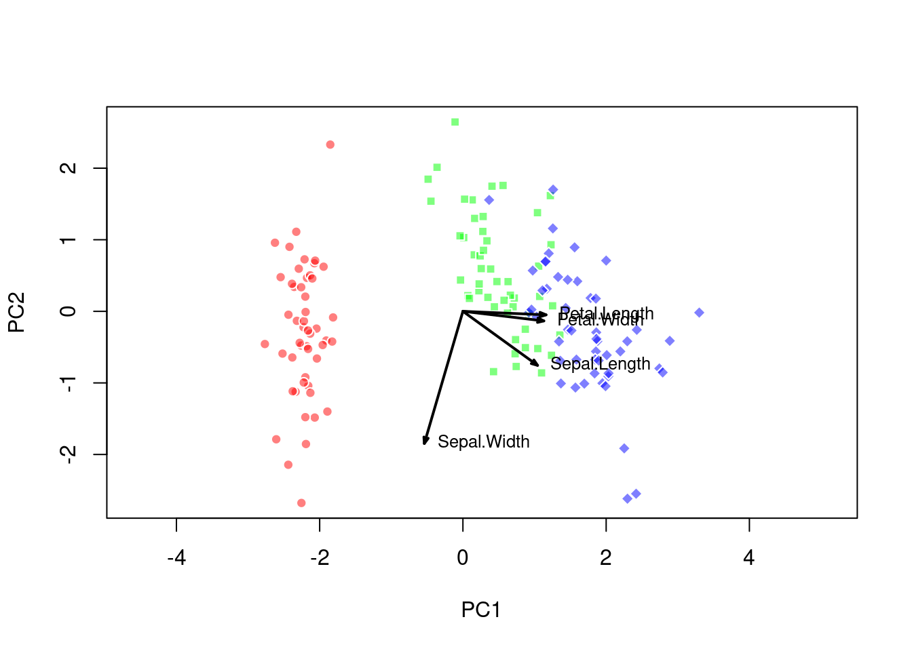
Referências
Oksanen, Jari, F. Guillaume Blanchet, Michael Friendly, Roeland Kindt, Pierre Legendre, Dan McGlinn, Peter R. Minchin, et al. 2020. vegan: Community Ecology Package. https://CRAN.R-project.org/package=vegan.
Paradis, Emmanuel, Simon Blomberg, Ben Bolker, Joseph Brown, Santiago Claramunt, Julien Claude, Hoa Sien Cuong, et al. 2020. ape: Analyses of Phylogenetics and Evolution. http://ape-package.ird.fr/.
Roberts, David W. 2019. labdsv: Ordination and Multivariate Analysis for Ecology. http://ecology.msu.montana.edu/labdsv/R.